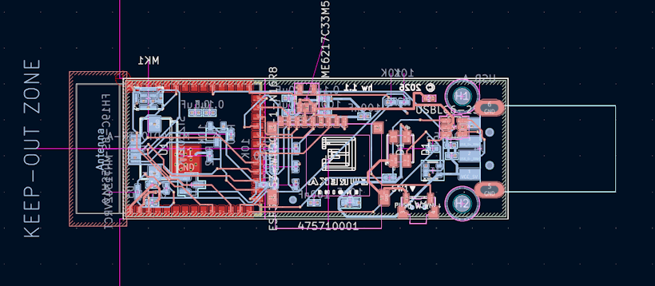
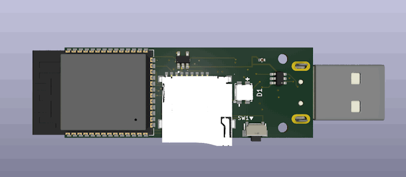
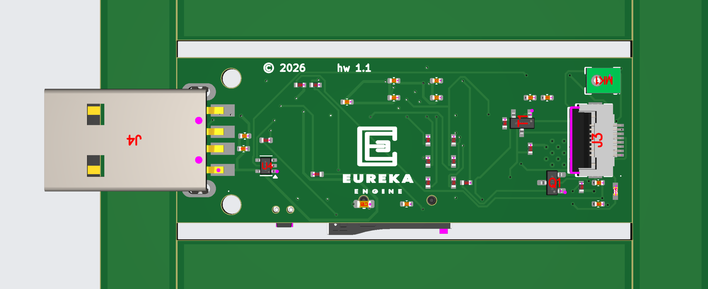
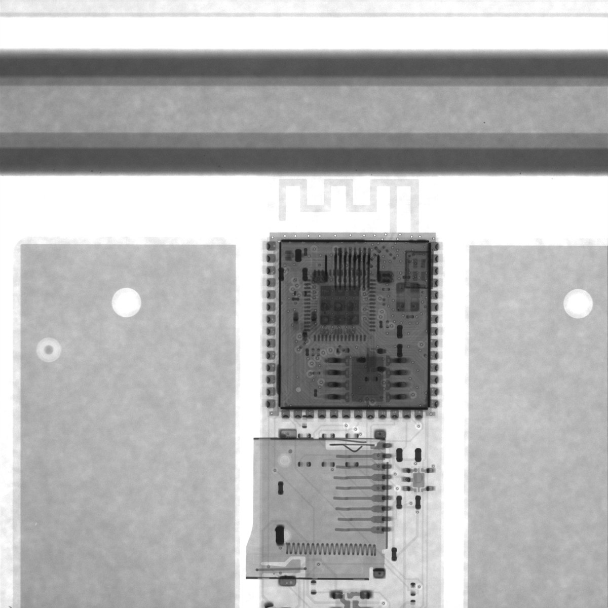
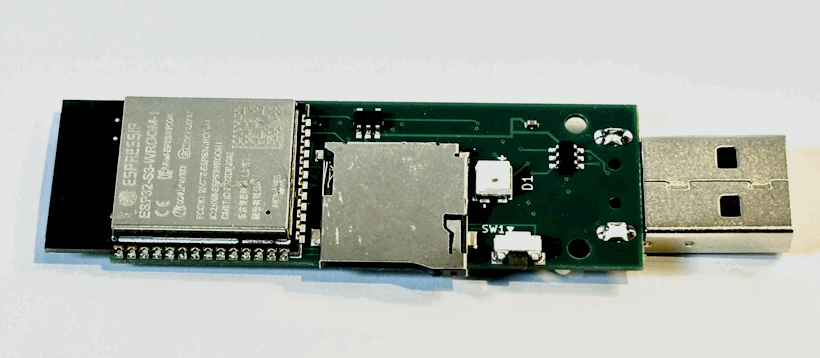

The board I could not buy
Most close-access security tools do one job: keyboard injection, storage, Wi-Fi or Bluetooth. The open-source USB Army Knife combines those capabilities into one platform and already supports several commercial development boards. None offered everything I wanted in one enclosed USB-stick form factor.
So I started working on the USB Army Knife Pro to fill that gap: a USB-stick device with a display, storage, wireless controls, more memory, new infrared transmission and an onboard microphone. I wanted everything!
I am a professional software engineer and a long-time hardware tinkerer. More than 25 years ago I studied analogue electronics, had etched simple through-hole boards and recently sent a basic design to China for fabrication. I had never designed a modern multilayer surface-mount board or ordered professional assembly. My terrible soldering and the tiny form factor meant a factory would have to populate it for me. I had ordered a PCB before, but never PCBA. That extra A adds component sourcing, machine placement, reflow, inspection and substitutions.
My assumptions sounded reasonable. A purpose-built board contained only what I needed, so surely it could approach the price of a mass-produced development board that already included somebody else's profit. I also wanted to own a design that could later accept a new processor, sensor or case.
What I lacked was the judgement of a hardware engineer who understood compact layout and production, and who could tell me, "NO, THAT'S A STUPID IDEA." What I had was an AI agent, an always-positive agent that would agree with me. Could it help me cross the gap from software to copper?
The tools in thirty seconds
To make electronics today, you need a tool to document your design and a factory somewhere to make it.
KiCad is a free, open-source electronics design suite. Its schematic editor describes the logical circuit. Its PCB editor assigns physical component footprints and routes copper tracks between them.
JLCPCB is a Chinese PCB manufacturer with an assembly service. For bare boards you upload manufacturing files. For PCBA you also provide a component list and placement file, then JLCPCB sources and fits the parts.
Quick glossary of terms
- AI credit: The service's billing unit for AI usage, not one raw model token.
- BOM: Bill of materials. The component shopping list sent to the assembly company.
- CPL: Component placement list. It tells the factory where each part belongs and its rotation.
- ERC / DRC: KiCad checks for logical schematic errors and physical PCB rule violations.
- PCB: The bare printed circuit board.
- PCBA: A PCB with its electronic components fitted and soldered.
- Basic / Extended part: JLCPCB parts already loaded for assembly, or parts that require a paid reel-loading setup.
- Gerbers: Manufacturing files describing the physical PCB layers.
- Footprint: The copper pad pattern used to mount a component.
- Via: A small plated hole carrying an electrical connection between copper layers.
- Reflow: Heating solder paste until it melts and joins surface-mounted components to the board.
- Flying probe / Kelvin test: Electrical tests for connections and the resistance of very small plated holes.
From an idea to a routed board
Getting a circuit board made is not trivial. You can spend weeks designing something, send the files away, and receive five beautifully manufactured copies of the same mistake.
The cautious route is to order unpopulated boards first, check their dimensions and footprints, then assemble one for testing. I could not populate a dense surface-mount board myself, so my first professionally assembled board would also be my first proper prototype. It compressed two stages into one risky order, but it was the only route I could realistically take.
I opened KiCad to a blank page and used published dongle schematics as high-level guides. Common parts were easy. For the missing screen connector, SD card slot and USB connector, Copilot found and imported candidate symbols and footprints for me to review.
While copying an external clock circuit I did not understand well enough to validate, Copilot suggested a processor module that already integrated the clock, memory, radio antenna and much of the supporting hardware. It was the obvious simpler route I had missed while following the reference schematic.
The processor's datasheet and hardware design guide drove the next iterations. Support capacitors, pull resistors, protection and filtering multiplied around the major parts. Reference boards used fewer components because their designers knew which recommendations could be relaxed; Copilot and I aimed for maximum correctness, consuming both space and routing.
I added components, asked Copilot to inspect them and ran KiCad's electrical rules checker. Copilot wrote scripts to trace power rails and verify connections. The datasheets described how the real parts should work; ERC checked whether our schematic was internally consistent. Eventually it reached zero errors.
This was my first big mistake.
I had not understood the relationship between a schematic symbol and an orderable component. A generic resistor is fine for describing a circuit, but it does not tell JLCPCB which resistor to buy. Every symbol needed a real stocked part with a verified package, footprint and pin mapping. Some unusual parts already had that information. Many ordinary ones were still KiCad defaults. Electrically the circuit made sense. For assembly, parts of it were quasi-fictional placeholders.
Neither Copilot nor I realised this, so we moved on to layout. It created a USB-stick outline, kept the antenna near an edge, grouped related parts and left space for connectors. The available area disappeared almost immediately.
Routing became a negotiation between physics, KiCad and several scripts. Traces moved through vias, power reached internal planes, the antenna needed clear space and external features had to align with a future case. Copilot ran Freerouting in Docker, then wrote scripts to connect planes and repair awkward areas. A human might move two components to create a path; the AI often added another via, and sometimes wrote scripts to repair problems created by earlier scripts. Small changes could produce entirely different routes.

Eventually the board passed DRC with no blocking errors or unconnected items. Only then did I investigate exactly what JLCPCB expected in its manufacturing package.

A KiCad plugin that generated JLCPCB files immediately reported parts with no assembly information. Every schematic item now needed mapping to a stocked component with the correct size, pinout and footprint. Copilot excelled at searching the catalogue, comparing datasheets and checking stock. It also exposed another cost: each uncommon Extended part could add a setup fee greater than the component's price.
Real packages, pads, pinouts and support circuits did not always match their placeholders. Replacing one could move its neighbours and destroy hours of routing; stock could disappear just as we finished. The layout, ERC, routing and DRC cycle repeated using parts the factory could actually place. The agent's patience with that analysis took me much further than I could have gone alone. It was not perfect. Neither was I.
Then the factory started emailing
The KiCad plugin generated the manufacturing package, and uploading it was easy. Then cheap resistors required extra units for feeder setup and attrition, and one selected part went out of stock. The $10 parts-list review had prevented neither problem. The microphone alone cost more than $5 per board, while its classification added roughly $3 to load that unique part. Small charges multiplied across five prototypes.
My $15 target was disappearing. Rather than continue with the first version, Copilot and I produced a v1.1 redesign with cheaper, more available parts. That meant changing the schematic and footprints, moving components, rerouting sections of the board and regenerating the manufacturing package before trying again.
The AI-assisted routing had favoured very small vias because they made the compact layout easier. They were within JLCPCB's published limits, but triggered a mandatory $37 electrical test. A production engineer would likely have chosen conventional dimensions and avoided it.
The USB connector's plastic could not survive normal reflow. A lower-temperature process cost extra and affected the whole board, while leaving it unpopulated meant shipping loose connectors for my terrible soldering. I asked what factory hand soldering would cost. They agreed to do it at no additional charge.
The infrared LED needed baking before reflow, while the microphone's hidden joints required X-ray inspection. Both added cost.
The factory also asked me to confirm the polarity and placement of several components because the board lacked clear silkscreen orientation marks. During an earlier DRC cleanup, Copilot had removed some markings to clear warnings instead of finding somewhere better to put them. That made the automated report cleaner while making the board less obvious to the humans assembling it. It was another example of solving the local problem without understanding the wider process.

JLCPCB's final production files showed the USB board inside a temporary panel covered with tooling features and tracking codes. Copilot helped compare it with my design, confirm dimensions and explain what would be removed after assembly.
The supplier was not being difficult. Each email was a small design review by someone who understood the production line, covering engineering I had not done. The AI translated factory language, checked returned files and helped me write precise replies while the prototype kept moving.
The factory was not a print button.
Manufacturing took about a week. JLCPCB sent photographs and X-rays along the way. I could not confidently diagnose much from them, but watching the design become physical was genuinely exciting.

The box arrived

There is something deeply satisfying about holding a circuit board that previously existed only as files. The boards looked professional: straight parts, sharp markings and features I had spent hours positioning now fixed in copper.
I held the button and plugged one in, prepared for a paperweight or perhaps smoke. Its programming interface appeared. That alone meant I had a device that did something rather than nothing. I flashed it, rebooted and opened the web interface. Feature after feature worked. It was going so well.
Then I tested the microphone.
Silence.
The error every check accepted
Electronic design tools separate a component into several representations. The schematic symbol describes its logical pins, the footprint describes the PCB copper and the manufacturer's datasheet defines the physical chip. All three must agree.
Our imported microphone library did not.
If you remember, I changed the microphone during the redesign to try to reduce costs. To preserve the schematic connections, its new footprint used the pad numbers expected by the older symbol, but those numbers were assigned to the wrong physical positions. Power, clock and data landed on the wrong pads. The symbol and footprint agreed with each other while neither agreed with the microphone.
KiCad saw no contradiction, I saw a microphone, Copilot said all was great. Every schematic pin reached the correct numbered PCB pad. The traces had legal widths and clearances, and nothing was left unconnected. The design was internally consistent, but the definition at its centre was wrong.
ERC had checked logical connections. DRC had checked physical layout rules. Neither compared the imported library with the manufacturer's pad map. The factory reviewed manufacturability, not our component definition, so it placed the ordered part on the supplied footprint.
Obviously the software looked guilty first. The driver initialised and read audio data without an obvious error. I changed channel selection, adjusted the clock and compared the driver with manufacturer examples. Every theory was plausible. None produced sound.
Only when I asked Copilot to compare the microphone datasheet directly with the physical pad positions in the KiCad footprint did the problem become clear. The processor was successfully operating its audio peripheral, but it was not connected to a functioning microphone circuit.
Software could not fix it. Firmware can move clock or data signals between processor pins, but it cannot move power between copper pads or reconnect hidden contacts. Repair required delicate rework around a tiny package.
The mistake was preventable. Every imported or substituted part should have been checked against the datasheet, schematic pins, footprint pads and package orientation. A simple table before routing would have exposed the mismatch.
That distinction matters. ERC and DRC had not failed. Copilot and I had asked them questions they could answer and assumed their green ticks answered a much larger one.
This points to a wider problem. Manufacturers do not always publish ready-to-use models for every design tool, so designers rely on community libraries and conversion services. Every translation creates another opportunity for error, especially when an AI is in charge. A 3D model can look perfect while the copper underneath is wrong. The factory manufactures that interpretation, not the datasheet.
Seasoned hardware engineers already know to distrust an unfamiliar library part until they have compared it with the package drawing. I did not yet have that instinct, and the AI was always good at assuming everything was fine. Agreement between all our sources looked like strong evidence because the agent was excellent at comparing structured files, but every file inherited the same assumption. Only the datasheet's physical package drawing came from outside that closed loop, and those are in PDFs that are not trivial to parse.
Manufacturers could make this safer by publishing verified, versioned libraries, while design tools could offer better ways to compare footprints with package drawings. Until then, the defence is review: verify every imported component, and report errors in shared libraries so the next designer does not manufacture the same mistake.
What worked, what it cost and what happens next
The honest result is that the board succeeded as a prototype and failed as a production design.
Microphone aside, it did roughly 90% of what I wanted. It powered up, accepted firmware and supported almost all the intended hardware. A few months earlier I had never designed a modern multilayer surface-mount board or placed a PCBA order. Now I was holding a custom device that had previously existed only on a computer screen. If you stop and think, that's amazing!
The economics were much less successful. The headline prices for PCB manufacturing are real, and a few bare boards can cost remarkably little. The five bare PCBs cost only $13.14. Turning them into populated, inspected boards was a different product entirely.
This is the best reconstruction of what the five assembled prototypes actually cost:
Full cost breakdown16 line items
| Item | Cost |
|---|---|
| PCB fabrication for five boards | $13.14 |
| Components for five devices | $54.94 |
| Parts-selection service, not ultimately needed | $10.00 |
| Component baking | $7.88 |
| Photo confirmation | $8.21 |
| Board cleaning | $0.82 |
| Flying probe test | $18.26 |
| PCBA remark option | $10.68 |
| Mandatory four-wire Kelvin test for the small vias | $37.00 |
| Extended-part loading fees, 13 unique parts x $3 | $39.00 |
| Reconciled balance: remaining PCBA setup, assembly and bundled charges | $79.88 |
| Merchandise subtotal | $279.81 |
| DHL shipping | $21.06 |
| Discount | -$13.06 |
| Pre-tax total | $287.81 |
| UK tax, GBP 53.94 | $72.62 |
| Total paid | $360.43 |
Including tax, the five prototypes cost about $72.09 each before adding a display. The components themselves were only $54.94 for all five devices, or roughly $10.99 per board. The expensive part was everything required to turn those components and bare PCBs into inspected assemblies.
Even that was not the cost of a complete device. The display was purchased separately and brought its own component and shipping costs, adding another few dollars per unit. A finished product would also need its enclosure, packaging and final assembly. The gap between my original $15 target and the real cost was no longer something another component substitution would fix.
The AI service recorded about 25,000 credits for the work. At roughly $0.01 per credit, that represents about $250 of AI usage. I did not pay that amount because most of the work happened before GitHub changed its billing formula, but it belongs in an honest accounting of the project.
What could have reduced my costs, and how does China do it more cheaply?
With hindsight, I was trying to design for electrical caution and small physical size, not for low-cost assembly. Those goals are not the same.
The first saving should have happened in the schematic. I used 13 unique Extended parts, adding about $39 in reel-loading fees before paying for the components themselves. I should have designed around JLCPCB's Basic catalogue from the beginning. Using two common Basic resistors in series can cost less than one uncommon Extended value. I treated part selection as something to resolve after the circuit was designed, when it should have been one of the design constraints.
The physical layout also worked against cheap assembly. Components on both sides required extra handling and moved the board out of JLCPCB's cheapest assembly options. Vias were not inherently the problem, but the unusually small ones chosen to make routing easier triggered the $37 Kelvin test. A production redesign would put components on one side where practical, use ordinary factory-standard vias, reduce the number of unique parts and replace the USB connector with one that could go through the normal reflow process.
Chinese product manufacturers can reduce costs further. They work inside an unusually dense network of component distributors, specialist suppliers, factories and skilled operators. Many standard parts are available locally, custom work can be turned around quickly and the people designing a product often work close to the people building it. That reduces shipping delays and makes each design iteration faster and cheaper.
The raw arithmetic shows why my $20 prototype target was not completely absurd. Five bare boards cost about $13 and the components cost about $55, which is roughly $13.60 per device before assembly. An integrated manufacturer with production engineers, established suppliers and its own assembly capability has a much better chance of closing the remaining gap.
That is where the future of this project is headed: partnering with a Chinese company to redesign the product for its supply chain and do what that manufacturing ecosystem does best.
Takeaways
I learnt so much on this project and I walk away with new skills, even with the AI riding along. If I needed to, I'd try all this again, but only on projects optimised for low cost: bigger and simpler. If I do, I probably will not need the AI as a helper. Here are my top takeaways.
Bare PCBs from China really are remarkably cheap. Five professionally manufactured boards cost me $13.14. If you can populate and test them yourself, or only need simple assembly, custom hardware has never been more accessible. With costs so low, who cares if you make a mistake!
PCBA can be cheap, but you MUST carefully design for the assembly service. A larger single-sided board built around Basic parts and standard processes might cost less than a smaller, denser and apparently more elegant design.
AI was brilliant at acceleration, but it is not an electrical engineer. It made the unfamiliar accessible and handled repetitive tasks long after I would have become bored. But I'd forgotten just how confidently wrong it can still be. It added parts and margins to avoid theoretical failures, yet missed the library error that disabled the microphone. It gave me enough skill to finish something I would otherwise not even have attempted. Its lesson was teaching me that there is much more to learn.
I did not make the cost target clear because I did not yet understand what controlled it. Asking for a board that was small, cautious, feature-rich and cheap sounded reasonable. At the time it was, but now I understand those goals competed with each other.
Experienced hardware engineers may read this and laugh at some of my decisions. That is fine. Recognising obvious mistakes is what experience looks like from the outside. The project did not prove that AI can replace that experience. It showed that AI can help someone without it get surprisingly far, learn quickly and arrive with much better questions for the people who do this professionally.